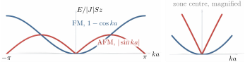
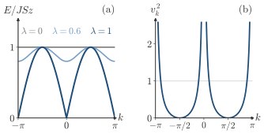
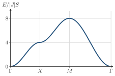

Advanced Quantum Materials 2027 · All lectures · Lecture notes
Session 6. Classical Magnetism and Magnons
6.15 Magnon dispersions in ferromagnets and antiferromagnets
How does the magnon energy go to zero at long wavelength, in a ferromagnet and in an antiferromagnet? We will now see that it goes to zero in both, since the magnon is a Goldstone mode. In a ferromagnet it goes as \(k^2\), (6.8), and in an antiferromagnet as \(|k|\), (6.9), because of the anomalous terms of its boson Hamiltonian.
\[S_i^+ \approx \sqrt{2S}\, a_i, \qquad S_i^- \approx \sqrt{2S}\, a_i^\dagger, \qquad S_i^z = S - a_i^\dagger a_i. \tag{6.7}\]
This is the linear form of the Holstein-Primakoff transformation of Section 6.14, which holds close to full polarization, \(\langle a_i^\dagger a_i\rangle\ll S\). The boson \(a_i\) counts the spin removed from \(S\) on site \(i\). With it the ferromagnetic Heisenberg model becomes a bosonic tight-binding Hamiltonian, where the magnon has the onsite energy \(z|J|S\) and hops with \(-|J|S\) to each of the \(z\) neighbors.
We Fourier transform the bosonic Hamiltonian of Section 6.14 on a Bravais lattice with coordination number \(z\) and first-neighbor structure factor \(\gamma(\mathbf k) = \tfrac1z\sum_{\boldsymbol\delta} e^{i\mathbf k\cdot\boldsymbol\delta}\). For the ferromagnet, with \(J<0\) and \(|J|=-J\), this gives a diagonal magnon Hamiltonian, with one band that is the onsite energy \(z|J|S\) plus the hops \(-|J|S\,e^{i\mathbf k\cdot\boldsymbol\delta}\) to the \(z\) neighbors.
The magnon band of a ferromagnet, with \(J<0\) on a Bravais lattice, is
\[E_\text{FM}(\mathbf k) = |J|\,S\,z\big(1-\gamma(\mathbf k)\big). \tag{6.8}\]
It is zero at \(\mathbf k=0\) and quadratic at small \(\mathbf k\), since \(1-\gamma(\mathbf k)\propto k^2\). It is exact for one magnon.
This dispersion is zero at \(\mathbf k=0\), as it has to be. A uniform rotation of all the spins costs no energy, and this is the Goldstone mode of the broken spin-rotation symmetry. If we expand \(\gamma(\mathbf k)\) for small \(\mathbf k\) we obtain \(E_\text{FM}(\mathbf k)\propto k^2\), which is a quadratic magnon dispersion, and this is the gapless and quadratic magnon of a ferromagnet.
The antiferromagnetic case needs one more step, because in the ground state the spins are not all up. On a bipartite lattice, we apply the Holstein-Primakoff transformation (6.7) separately on the two sublattices. On the \(B\) sublattice the roles of \(S^+\) and \(S^-\) are exchanged, since these spins point in the opposite direction. We have \(S_i^z=S-a_i^\dagger a_i\) on \(A\), but \(S_j^z=-S+b_j^\dagger b_j\) on \(B\). If we insert this into \(\mathbf S_i\cdot\mathbf S_j\) for a bond between the two sublattices, we obtain density terms \(a^\dagger a\) and \(b^\dagger b\). We also obtain anomalous terms \(a_i b_j\) and \(a_i^\dagger b_j^\dagger\), which do not conserve the particle number.
This tells us that the magnon vacuum on top of the Néel state is not the bosonic vacuum. To diagonalize the Hamiltonian we need a Bogoliubov transformation and not only a Fourier transform, as for the pairing term of the BdG Hamiltonian in Section 5.8. If we do this, we obtain the antiferromagnetic magnon dispersion.
In linear spin-wave theory the magnon band of an antiferromagnet, with \(J>0\) on a bipartite Bravais lattice such as the chain or the square lattice, is
\[E_\text{AFM}(\mathbf k) = J\,S\,z\,\sqrt{1-\gamma(\mathbf k)^2}. \tag{6.9}\]
It is zero at \(\mathbf k=0\) and linear at small \(\mathbf k\). The square root comes from the Bogoliubov transformation that the anomalous terms \(a_ib_j\) need, and the square root of a quantity proportional to \(k^2\) is linear in \(|k|\).
The steps The Bogoliubov transformation of the antiferromagnet
On a bond between the site \(i\) of \(A\) and the site \(j\) of \(B\) the linear form gives \(S_i^zS_j^z\approx-S^2+S(a_i^\dagger a_i+b_j^\dagger b_j)\). It also gives \(\tfrac12(S_i^+S_j^-+S_i^-S_j^+)\approx S(a_ib_j+a_i^\dagger b_j^\dagger)\), since on \(B\) we have \(S_j^+\approx\sqrt{2S}\,b_j^\dagger\). After the Fourier transform the momenta \(\mathbf k\) and \(-\mathbf k\) are coupled in pairs, and up to a constant each pair gives
\[H_{\mathbf k} = JSz\Big[a_{\mathbf k}^\dagger a_{\mathbf k} + b_{-\mathbf k}^\dagger b_{-\mathbf k} + \gamma_{\mathbf k}\big(a_{\mathbf k}b_{-\mathbf k} + a_{\mathbf k}^\dagger b_{-\mathbf k}^\dagger\big)\Big],\]
with \(\gamma_{\mathbf k}=\gamma(\mathbf k)\). The simplest case is \(\gamma_{\mathbf k}=0\), as at \(k=\pm\pi/2\) on the chain. There the anomalous term is absent, and \(a_{\mathbf k}\) is already a magnon, with the energy \(JSz\).
For \(\gamma_{\mathbf k}\neq0\) we look for a boson \(\alpha_{\mathbf k}=u\,a_{\mathbf k}+v\,b_{-\mathbf k}^\dagger\) with \([\alpha_{\mathbf k},H_{\mathbf k}]=\omega\,\alpha_{\mathbf k}\), which removes a quantum of energy \(\omega\). We write \(\varepsilon=JSz\) and \(\Delta=JSz\,\gamma_{\mathbf k}\), and the commutators
\[[a_{\mathbf k},H_{\mathbf k}]=\varepsilon\,a_{\mathbf k}+\Delta\,b_{-\mathbf k}^\dagger, \qquad [b_{-\mathbf k}^\dagger,H_{\mathbf k}]=-\varepsilon\,b_{-\mathbf k}^\dagger-\Delta\,a_{\mathbf k}\]
give the eigenvalue problem
\[\begin{pmatrix}\varepsilon & -\Delta\\ \Delta & -\varepsilon\end{pmatrix}\begin{pmatrix}u\\ v\end{pmatrix}=\omega\begin{pmatrix}u\\ v\end{pmatrix}, \qquad \omega=\sqrt{\varepsilon^2-\Delta^2}=JSz\sqrt{1-\gamma_{\mathbf k}^2},\]
which is (6.9). The minus sign under the root comes from the anomalous term. For bosons \([a_{\mathbf k},a_{\mathbf k}^\dagger b_{-\mathbf k}^\dagger]=+b_{-\mathbf k}^\dagger\), while \([b_{-\mathbf k}^\dagger,a_{\mathbf k}b_{-\mathbf k}]=-a_{\mathbf k}\), so the two entries off the diagonal have opposite signs and the matrix is not symmetric. With fermions the pair term is \(a b+b^\dagger a^\dagger\), both commutators give a minus sign, the matrix is symmetric, and the root is \(\sqrt{\varepsilon^2+\Delta^2}\), which is (5.9) of the BdG Hamiltonian.
The new operator is a boson when \([\alpha_{\mathbf k},\alpha_{\mathbf k}^\dagger]=u^2-v^2=1\), and the eigenvector then gives
\[u^2=\frac12\Big(\frac{\varepsilon}{\omega}+1\Big), \qquad v^2=\frac12\Big(\frac{1}{\sqrt{1-\gamma_{\mathbf k}^2}}-1\Big).\]
The magnon vacuum, with \(\alpha_{\mathbf k}|0\rangle=0\), holds \(v^2\) Holstein-Primakoff bosons in each mode, which is nonzero wherever \(\gamma_{\mathbf k}\neq0\), for instance \(1.19\) at \(k=0.3\) on the chain. Schematic 6.11 shows \(\omega\) and \(v^2\) for the chain. Near \(k=0\) the chain has \(v^2\approx1/(2|k|)\), so the average of \(v^2\) over the zone grows as the logarithm of the number of k-points. These zero-point bosons remove the Néel order that the theory starts from, so on the chain (6.9) is only an estimate. On the square lattice the average stays finite, and it reduces the moment of a sublattice from \(S\) by about \(0.2\), to \(0.30\) for \(S=\tfrac12\).
Close to \(\mathbf k=0\) we have \(1-\gamma(\mathbf k)^2 \propto k^2\), so \(E_\text{AFM}(\mathbf k)\propto |k|\). This is a linear dispersion similar to a Dirac cone, which is gapless at the same point but linear and not quadratic. This is the rule that magnons are quadratic in ferromagnets and linear in antiferromagnets, which we have now derived. It is also one more example of a linear dispersion that comes from the structure of a symmetry and is not put in by hand. The Dirac cones of Section 2.11 and Session 3 are the other examples. Figure 6.6 shows (6.8) and (6.9) together, with a magnified view of the zone center, so that the parabola and the cone can be distinguished.


Inelastic neutron scattering measures the energy of a magnon at each wave vector, so it measures the band that (6.9) describes. In the square-lattice antiferromagnet K\(_2\)V\(_3\)O\(_8\), with spins \(S=\tfrac12\), the neutron data give the near-neighbor exchange constant \(1.08\pm0.03\) meV. At the antiferromagnetic zone center the measurement finds a small energy gap of \(72\pm9\) micro-eV, which is \(0.072\) meV. On the square lattice (6.9) is zero there, at \(\mathbf k=(\pi,\pi)\) as at \(\mathbf k=0\), so in our reading the gap needs a small term beyond the isotropic exchange, which the model of this page leaves out. Near the zone boundary the measured spectrum deviates from linear spin-wave theory, which is the theory of (6.9). The measurement is in this article.
On a chain the two magnon bands are
\[E_\text{FM}\propto1-\cos k, \qquad E_\text{AFM}\propto|\sin k|.\]
At small \(k\) we double the wave vector. How do the two energies change?
Show the answers
- A. ✗ False
This is false. For the ferromagnet of a chain \(E\propto1-\cos k\). This is \(0.0050\) at \(k=0.1\) and \(0.0199\) at \(k=0.2\), a ratio of about \(4\) and not \(2\).
- B. ✗ False
This is false. For the antiferromagnet of a chain \(E\propto\sqrt{1-\cos^2k}=|\sin k|\). This is \(0.0998\) at \(k=0.1\) and \(0.1987\) at \(k=0.2\), a ratio of about \(2\) and not \(4\).
- C. ✓ True
This is true. For small \(k\) we have \(1-\cos k\approx k^2/2\), so the ferromagnetic band is quadratic. The antiferromagnetic band \(|\sin k|=\sqrt{1-\cos^2k}\) is the square root of a quantity proportional to \(k^2\), which is linear.
The ferromagnetic magnon band is
\[E(\mathbf k)=|J|Sz\big(1-\gamma(\mathbf k)\big).\]
A square lattice has \(z=4\) and \(\gamma(\mathbf k)=\tfrac12(\cos k_x+\cos k_y)\). What is the ferromagnetic magnon energy at \(\mathbf k=(\pi,\pi)\)?
Show the answers
- A. ✗ False
This is false. The energy is zero only where \(\gamma=1\), which is \(\mathbf k=(0,0)\). At \((\pi,\pi)\) we have \(\gamma=-1\), which is the opposite end of the band.
- B. ✗ False
This is false. This value is found at \(\mathbf k=(\pi,0)\), where \(\gamma=\tfrac12(-1+1)=0\) and \(1-\gamma=1\). At \((\pi,\pi)\) we have \(\gamma=-1\) and the energy is twice as large.
- C. ✓ True
This is true. At \((\pi,\pi)\) we have \(\gamma=-1\), so \(1-\gamma=2\). Then \(E=2|J|Sz=8|J|S\) for \(z=4\), which is the top of the band.

Download the pyqula scriptg4_magnon_square.pyThe ferromagnetic magnon of the square lattice, \(E=4|J|S[1-(\cos k_x+\cos k_y)/2]\), along the path \(\Gamma\), \(X\), \(M\), \(\Gamma\), computed with pyqula as a band with the hopping \(-|J|S\) and the onsite energy \(4|J|S\). It is \(0\) at \(\Gamma\), \(4|J|S\) at \(X\) and \(8|J|S\) at \(M\).
A Heisenberg chain of spins \(S=\tfrac12\) has
\[H=J\sum_i\mathbf S_i\cdot\mathbf S_{i+1}, \qquad J>0.\]
Which picture is its magnon band near \(k=0\) in linear spin-wave theory?
Show the answers
- A. ✗ False
This is false. This is \(1-\cos k\), the band of the ferromagnet with \(J=-1\). It is \(0.005\) at \(k=0.1\) and \(0.020\) at \(k=0.2\), four times more for twice the \(k\), so it is quadratic. For \(J>0\) the chain is an antiferromagnet.
- B. ✓ True
This is true. For \(J>0\) the chain is an antiferromagnet, and its band is \(2JS|\sin k|\), which is \(|\sin k|\) in units of \(J\) for \(S=\tfrac12\). Near \(k=0\) it is \(2JS|k|\), linear, because of the anomalous terms \(a_ib_j\).
- C. ✗ False
This is false. This band is \(0.2\) at \(k=0\). In linear spin-wave theory the Néel state breaks the rotation symmetry of \(H\), so turning all the spins together costs no energy, and the magnon at \(k=0\) has zero energy for any \(J>0\).
Expand the two magnon bands at small \(\mathbf k\), with \(k\) in units of the inverse lattice constant,
\[E_\text{FM}=|J|Sz\big(1-\gamma(\mathbf k)\big), \qquad E_\text{AFM}=JSz\sqrt{1-\gamma(\mathbf k)^2}.\]
Do it for the chain, with \(z=2\) and \(\gamma=\cos k\), and for the square lattice, with \(z=4\) and \(\gamma=\tfrac12(\cos k_x+\cos k_y)\).
Solution
For the chain \(1-\cos k\approx k^2/2\), so \(E_\text{FM}\approx|J|S\,k^2\). For the antiferromagnet \(1-\cos^2k=\sin^2k\approx k^2\), so \(E_\text{AFM}\approx2JS|k|\).
For the square lattice \(\gamma\approx1-k^2/4\) with \(k^2=k_x^2+k_y^2\). So \(1-\gamma\approx k^2/4\) and \(E_\text{FM}\approx|J|S\,k^2\), the same as on the chain. For the antiferromagnet \(1-\gamma^2\approx2(1-\gamma)\approx k^2/2\), so
\[E_\text{AFM}\approx4JS\,\frac{|k|}{\sqrt2}=2\sqrt2\,JS|k|.\]
At small \(k\) both bands depend only on \(|\mathbf k|\), so they are isotropic. The ferromagnet has the spin-wave stiffness \(|J|S\), the coefficient of \(k^2\), which is the same on both lattices. The antiferromagnet has the velocity \(2JS\) on the chain and \(2\sqrt2\,JS\) on the square lattice, in units of the lattice constant over \(\hbar\). In linear spin-wave theory these are the numbers that a neutron measurement reads from the spectrum near the zone center, so they give the exchange \(J\) of an ordered magnet. For spins \(\tfrac12\) both velocities are estimates. The chain has no Néel order, and on the square lattice the quantum fluctuations raise the velocity by about 16 percent at first order in \(1/S\). The stiffness of the ferromagnet is exact, since its one-magnon band is exact.
- In Section 6.16 the magnon bands of the honeycomb lattice get a gap and a Chern number.
- In Section 8.1 the magnon with \(\Delta S=1\) is set against the spinon of a quantum spin liquid, which has \(S=1/2\).
- In Section 10.7 magnon spectra are one of the forward methods whose results are used to learn a Hamiltonian from data.